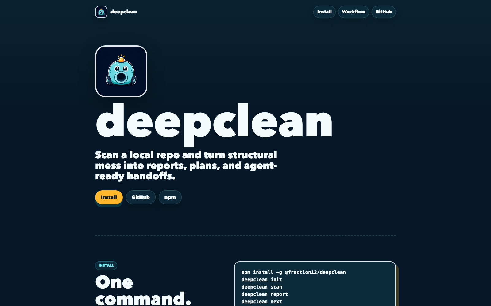

<title>Maison Garg</title>
<link rel="preconnect" href="https://fonts.googleapis.com">
<link rel="preconnect" href="https://fonts.gstatic.com" crossorigin>
<link rel="stylesheet" href="https://fonts.googleapis.com/css2?family=Bodoni+Moda:ital,opsz,wght@0,6..96,400..800;1,6..96,400..700&family=Jost:wght@300;400;500;600&family=IBM+Plex+Mono:wght@400;500&display=swap">
<style>
  :root {
    color-scheme: dark;
    --espresso: #140e0a;
    --espresso-2: #1d150f;
    --saddle: #6b3f22;
    --cognac: #a8653a;
    --tan: #c98f5f;
    --stitch: #eadcc4;
    --stitch-dim: #b9a88d;
    --brass: #c8a15a;
    --brass-hi: #efd79b;
    --suede: #3b4630;
    --suede-2: #2a3222;
    --line: rgba(234, 220, 196, 0.14);
    --display: 'Bodoni Moda', 'Didot', 'Bodoni 72', Georgia, serif;
    --sans: 'Jost', 'Futura', 'Avenir Next', system-ui, sans-serif;
    --mono: 'IBM Plex Mono', ui-monospace, Menlo, monospace;
    --grain: url("data:image/svg+xml,%3Csvg xmlns='http://www.w3.org/2000/svg' width='360' height='360'%3E%3Cfilter id='f'%3E%3CfeTurbulence type='fractalNoise' baseFrequency='.85' numOctaves='4' stitchTiles='stitch'/%3E%3CfeDiffuseLighting lighting-color='%23d9a377' surfaceScale='2.4'%3E%3CfeDistantLight azimuth='225' elevation='52'/%3E%3C/feDiffuseLighting%3E%3C/filter%3E%3Crect width='100%25' height='100%25' filter='url(%23f)'/%3E%3C/svg%3E");
    --mottle: url("data:image/svg+xml,%3Csvg xmlns='http://www.w3.org/2000/svg' width='900' height='600'%3E%3Cfilter id='m'%3E%3CfeTurbulence type='fractalNoise' baseFrequency='.006' numOctaves='3' seed='7'/%3E%3CfeColorMatrix values='0 0 0 0 .1  0 0 0 0 .05  0 0 0 0 .02  0 0 0 1.4 -.45'/%3E%3C/filter%3E%3Crect width='100%25' height='100%25' filter='url(%23m)'/%3E%3C/svg%3E");
  }
  * { box-sizing: border-box; }
  html { scroll-behavior: smooth; }
  body {
    margin: 0;
    background: var(--espresso);
    color: var(--stitch);
    font-family: var(--sans);
    font-size: 16px;
    line-height: 1.6;
    -webkit-font-smoothing: antialiased;
    overflow-x: hidden;
  }
  a { color: inherit; }
  img { max-width: 100%; display: block; }
  :focus-visible { outline: 1px dashed var(--brass-hi); outline-offset: 4px; }

  .wrap { width: min(1180px, 100%); margin-inline: auto; padding-inline: clamp(16px, 4vw, 40px); }

  /* ---------- Nav ---------- */
  .nav {
    position: sticky; top: env(safe-area-inset-top, 0px); z-index: 20;
    background: linear-gradient(var(--espresso) 60%, transparent);
  }
  .nav .wrap { display: flex; align-items: center; justify-content: space-between; gap: 16px; padding-block: 18px; }
  .monogram {
    display: grid; place-items: center; width: 42px; height: 42px; border-radius: 50%;
    border: 1px solid var(--brass); color: var(--brass-hi);
    font-family: var(--display); font-style: italic; font-size: 17px; text-decoration: none;
    background: radial-gradient(circle at 35% 30%, rgba(239,215,155,.18), transparent 60%);
  }
  .nav ul { display: flex; gap: clamp(14px, 3vw, 34px); list-style: none; margin: 0; padding: 0; }
  .nav a.l {
    font-size: 12px; letter-spacing: .22em; text-transform: uppercase; text-decoration: none; color: var(--stitch-dim);
    transition: color .3s;
  }
  .nav a.l:hover { color: var(--brass-hi); }

  /* ---------- Hero: trunk on a checker floor ---------- */
  .hero { position: relative; padding-top: clamp(20px, 5vw, 56px); overflow: hidden; isolation: isolate; }
  .lamp {
    position: absolute; inset: -20% -10% 0; z-index: -1; pointer-events: none;
    background: radial-gradient(ellipse 42% 48% at var(--lx, 38%) var(--ly, 30%), rgba(219,150,90,.22), transparent 70%);
    transition: background-position .2s;
  }
  .floor {
    position: absolute; left: -40%; right: -40%; bottom: -4%; height: 70%; z-index: -1;
    background: repeating-conic-gradient(#5a3a24 0 25%, #2c3322 0 50%) 0 0 / 120px 120px;
    transform: perspective(900px) rotateX(58deg);
    transform-origin: bottom center;
    -webkit-mask-image: linear-gradient(to top, rgba(0,0,0,.85), rgba(0,0,0,.35) 55%, transparent 90%);
            mask-image: linear-gradient(to top, rgba(0,0,0,.85), rgba(0,0,0,.35) 55%, transparent 90%);
    filter: saturate(.85) brightness(.8);
  }
  .hero::after { content: ""; position: absolute; left: 0; right: 0; bottom: 0; height: 90px; z-index: -1; background: linear-gradient(transparent, var(--espresso)); pointer-events: none; }
  .floor::after {
    content: ""; position: absolute; inset: 0;
    background: radial-gradient(ellipse 50% 60% at 40% 20%, rgba(239,190,130,.28), transparent 70%);
  }

  .hero-grid {
    display: grid; grid-template-columns: minmax(0, 1.55fr) minmax(0, 1fr); gap: clamp(20px, 4vw, 56px);
    align-items: end; padding-bottom: clamp(56px, 9vw, 120px);
  }

  .leather {
    position: relative; border-radius: 22px; overflow: hidden;
    background:
      radial-gradient(120% 90% at 20% 10%, #8d5530 0%, var(--saddle) 45%, #3f2413 100%);
    box-shadow:
      0 40px 80px -30px rgba(0,0,0,.8),
      0 2px 0 rgba(255,210,160,.12) inset,
      0 -18px 40px rgba(0,0,0,.35) inset;
  }
  .leather::before, .leather::after { content: ""; position: absolute; inset: 0; pointer-events: none; }
  .leather::before { background-image: var(--grain); mix-blend-mode: multiply; opacity: .75; }
  .leather::after { background-image: var(--mottle); background-size: cover; mix-blend-mode: multiply; opacity: .9; }

  .stitch-svg { position: absolute; inset: 12px; width: calc(100% - 24px); height: calc(100% - 24px); z-index: 2; pointer-events: none; overflow: visible; }
  .stitch-svg rect { fill: none; stroke: var(--stitch); stroke-width: 1.6; stroke-dasharray: 7 6; stroke-linecap: round; opacity: .85; }

  .hero-panel { padding: clamp(96px, 9vw, 110px) clamp(28px, 5vw, 64px) clamp(34px, 5vw, 56px); min-height: 440px; display: flex; flex-direction: column; justify-content: space-between; gap: 40px; }
  .hero-panel > * { position: relative; z-index: 3; }
  .hero-panel > .stitch-svg, .hero-panel > .tag-hold { position: absolute; }
  .eyebrow { font-family: var(--mono); font-size: 11.5px; letter-spacing: .18em; text-transform: uppercase; color: rgba(234,220,196,.72); }
  .name {
    margin: 0; font-family: var(--display); font-weight: 500; font-size: clamp(3rem, 6.8vw, 6.6rem); line-height: .9; letter-spacing: -.02em;
    background: linear-gradient(175deg, #f6e2a8 0%, #c9a052 38%, #8a6326 55%, #e9cf8a 72%, #a57b35 100%);
    -webkit-background-clip: text; background-clip: text; color: transparent;
    filter: drop-shadow(0 1px 0 rgba(0,0,0,.6)) drop-shadow(0 -1px 0 rgba(255,220,170,.15));
    text-wrap: balance;
  }
  .name em { font-style: italic; font-weight: 400; display: block; padding-left: .55em; }
  .role { display: flex; flex-wrap: wrap; gap: 10px 22px; align-items: baseline; font-size: clamp(15px, 1.6vw, 18px); color: var(--stitch); }
  .role b { font-weight: 500; }
  .role span { color: rgba(234,220,196,.7); }

  /* Brass tag */
  .tag-hold { position: absolute; top: -2px; right: clamp(22px, 5vw, 56px); z-index: 4; transform-origin: 50% 0; animation: swing 5.5s ease-in-out infinite; }
  .tag-hold .cord { width: 1.5px; height: 58px; margin-inline: auto; background: linear-gradient(var(--stitch-dim), var(--stitch)); }
  .tag {
    width: 124px; padding: 22px 14px 16px; text-align: center; border-radius: 6px 6px 10px 10px;
    clip-path: polygon(22% 0, 78% 0, 100% 14%, 100% 100%, 0 100%, 0 14%);
    background: linear-gradient(160deg, #f1e4c9, #d8c29b);
    color: #3a2414; box-shadow: 0 16px 30px rgba(0,0,0,.4);
    position: relative;
  }
  .tag::before { content: ""; position: absolute; top: 8px; left: 50%; width: 9px; height: 9px; margin-left: -4.5px; border-radius: 50%; background: var(--espresso); box-shadow: 0 0 0 2px var(--brass); }
  .tag small { display: block; font-family: var(--mono); font-size: 9.5px; letter-spacing: .14em; text-transform: uppercase; opacity: .75; }
  .tag strong { display: block; font-family: var(--display); font-style: italic; font-size: 26px; font-weight: 500; line-height: 1.1; margin: 6px 0 4px; }
  @keyframes swing { 0%, 100% { transform: rotate(-3.5deg); } 50% { transform: rotate(3deg); } }

  .hero-side { display: grid; gap: 22px; padding-bottom: 10px; }
  .portrait {
    width: 132px; aspect-ratio: 1; border-radius: 50%; overflow: hidden; margin: 0;
    border: 2px solid var(--brass); box-shadow: 0 0 0 6px var(--espresso-2), 0 0 0 7px rgba(200,161,90,.45);
  }
  .portrait img { width: 100%; height: 100%; object-fit: cover; filter: sepia(.35) saturate(.9) contrast(1.05); }
  .lede { font-size: clamp(17px, 1.7vw, 20px); line-height: 1.55; color: var(--stitch); max-width: 36ch; margin: 0; font-weight: 300; }
  .lede em { font-family: var(--display); font-style: italic; color: var(--brass-hi); font-weight: 400; }
  .ctas { display: flex; flex-wrap: wrap; gap: 10px; }
  .btn {
    display: inline-flex; align-items: center; gap: 10px; padding: 12px 20px; border-radius: 999px; text-decoration: none;
    font-size: 12px; letter-spacing: .2em; text-transform: uppercase; font-weight: 500;
    border: 1px solid var(--brass); color: var(--brass-hi); transition: background .3s, color .3s;
  }
  .btn.solid { background: linear-gradient(180deg, #e2c27c, #b58c43); color: #2a1a0d; border-color: transparent; }
  .btn:hover { background: var(--brass-hi); color: #2a1a0d; }

  /* ---------- Section heads ---------- */
  section.block { padding-block: clamp(64px, 10vw, 128px); position: relative; }
  .sec-head { display: flex; align-items: end; justify-content: space-between; gap: 20px; flex-wrap: wrap; margin-bottom: clamp(32px, 5vw, 56px); border-bottom: 1px solid var(--line); padding-bottom: 18px; }
  .sec-head h2 { margin: 0; font-family: var(--display); font-weight: 400; font-size: clamp(2.4rem, 5.5vw, 4.4rem); line-height: 1; letter-spacing: -.01em; }
  .sec-head h2 em { color: var(--tan); }
  .sec-head p { margin: 0; max-width: 38ch; color: var(--stitch-dim); font-size: 15px; }

  /* ---------- Collection ---------- */
  .collection { display: grid; grid-template-columns: repeat(12, 1fr); gap: clamp(18px, 2.4vw, 30px); }
  .piece { grid-column: span 6; display: grid; gap: 16px; text-decoration: none; }
  .piece.wide { grid-column: span 12; grid-template-columns: 1.5fr 1fr; align-items: end; gap: clamp(18px, 3vw, 40px); }
  .piece.third { grid-column: span 4; }
  .frame {
    position: relative; border-radius: 14px; overflow: hidden; padding: 12px;
    background: radial-gradient(120% 100% at 30% 0%, #7a4727, #4a2a16 80%);
    box-shadow: 0 30px 50px -28px rgba(0,0,0,.9);
    transition: transform .6s cubic-bezier(.2,.7,.2,1), box-shadow .6s;
  }
  .frame::before { content: ""; position: absolute; inset: 0; background-image: var(--grain); mix-blend-mode: multiply; opacity: .7; pointer-events: none; }
  .frame::after {
    content: ""; position: absolute; inset: 6px; border-radius: 10px; border: 1.4px dashed rgba(234,220,196,.55); pointer-events: none;
  }
  .frame .img { position: relative; border-radius: 6px; overflow: hidden; aspect-ratio: 16 / 10; background: #000; }
  .frame img { width: 100%; height: 100%; object-fit: cover; object-position: top left; filter: sepia(.55) saturate(.8) brightness(.82) contrast(1.05); transition: filter .8s, transform 1.2s cubic-bezier(.2,.7,.2,1); }
  .frame .sheen { position: absolute; inset: 0; background: linear-gradient(105deg, transparent 35%, rgba(255,225,180,.22) 50%, transparent 65%); transform: translateX(-120%); transition: transform 1.1s cubic-bezier(.2,.7,.2,1); pointer-events: none; }
  .piece:hover .frame, .piece:focus-visible .frame { transform: translateY(-6px) rotate(-.4deg); box-shadow: 0 44px 60px -30px rgba(0,0,0,.95); }
  .piece:hover img, .piece:focus-visible img { filter: none; transform: scale(1.03); }
  .piece:hover .sheen, .piece:focus-visible .sheen { transform: translateX(120%); }

  .label { display: grid; grid-template-columns: 1fr auto; gap: 4px 16px; align-items: baseline; }
  .label h3 { margin: 0; font-family: var(--display); font-weight: 500; font-size: clamp(1.6rem, 2.6vw, 2.2rem); line-height: 1.05; color: var(--stitch); }
  .label .kind { font-family: var(--mono); font-size: 11px; letter-spacing: .14em; text-transform: uppercase; color: var(--brass); white-space: nowrap; }
  .label p { grid-column: 1 / -1; margin: 4px 0 0; color: var(--stitch-dim); font-size: 15px; max-width: 52ch; font-weight: 300; }
  .piece.wide .label h3 { font-size: clamp(2rem, 4vw, 3.4rem); }
  .stamp { display: inline-flex; gap: 8px; align-items: center; margin-top: 12px; font-family: var(--mono); font-size: 11px; letter-spacing: .1em; text-transform: uppercase; color: var(--stitch-dim); }
  .stamp i { width: 7px; height: 7px; border-radius: 50%; background: #8fae6c; box-shadow: 0 0 10px #8fae6c; }
  .figure { font-family: var(--display); font-style: italic; color: var(--brass-hi); font-size: clamp(3.4rem, 7vw, 6rem); line-height: .9; margin: 0 0 10px; }

  /* ---------- Suede band ---------- */
  .suede {
    position: relative; background: linear-gradient(180deg, var(--suede), var(--suede-2));
    border-block: 1px solid rgba(234,220,196,.1);
  }
  .suede::before { content: ""; position: absolute; inset: 0; background-image: var(--grain); opacity: .35; mix-blend-mode: soft-light; pointer-events: none; }
  .about { display: grid; grid-template-columns: 1fr 1.2fr; gap: clamp(24px, 5vw, 80px); align-items: start; position: relative; }
  .about blockquote { margin: 0; font-family: var(--display); font-style: italic; font-size: clamp(1.9rem, 3.6vw, 3rem); line-height: 1.12; color: var(--stitch); text-wrap: balance; }
  .about .body { display: grid; gap: 16px; color: rgba(234,220,196,.82); font-weight: 300; font-size: 17px; max-width: 56ch; }
  .about .body p { margin: 0; }
  .facts { display: grid; grid-template-columns: repeat(3, 1fr); gap: 1px; background: rgba(234,220,196,.14); border: 1px solid rgba(234,220,196,.14); margin-top: 10px; }
  .facts div { background: var(--suede-2); padding: 16px; }
  .facts dt { font-family: var(--mono); font-size: 10.5px; letter-spacing: .16em; text-transform: uppercase; color: var(--stitch-dim); }
  .facts dd { margin: 4px 0 0; font-family: var(--display); font-size: 22px; font-variant-numeric: tabular-nums; }

  /* ---------- Journal ---------- */
  .journal { list-style: none; margin: 0; padding: 0; border-top: 1px solid var(--line); }
  .journal li { border-bottom: 1px solid var(--line); }
  .journal a {
    display: grid; grid-template-columns: 120px 1fr auto; gap: 20px; align-items: baseline; padding: 26px 0; text-decoration: none;
    transition: padding .5s cubic-bezier(.2,.7,.2,1), background .5s;
  }
  .journal a:hover { padding-left: 16px; background: linear-gradient(90deg, rgba(200,161,90,.08), transparent 60%); }
  .journal time { font-family: var(--mono); font-size: 11.5px; letter-spacing: .1em; text-transform: uppercase; color: var(--stitch-dim); font-variant-numeric: tabular-nums; }
  .journal h3 { margin: 0; font-family: var(--display); font-weight: 400; font-size: clamp(1.3rem, 2.4vw, 1.9rem); line-height: 1.2; }
  .journal .dek { display: block; margin-top: 6px; font-size: 15px; color: var(--stitch-dim); font-weight: 300; }
  .journal .rt { font-family: var(--mono); font-size: 11px; color: var(--brass); white-space: nowrap; }

  /* ---------- Contact ---------- */
  .contact { text-align: center; display: grid; justify-items: center; gap: 24px; }
  .seal {
    width: 150px; aspect-ratio: 1; border-radius: 50%; display: grid; place-items: center; position: relative;
    background: radial-gradient(circle at 35% 30%, #f0d89c, #b8893e 55%, #6d4c1d 100%);
    box-shadow: 0 20px 40px rgba(0,0,0,.6), inset 0 2px 3px rgba(255,255,255,.5), inset 0 -6px 14px rgba(0,0,0,.35);
  }
  .seal span { font-family: var(--display); font-style: italic; font-size: 54px; color: #5b3d14; text-shadow: 0 1px 0 rgba(255,236,190,.6), 0 -1px 0 rgba(0,0,0,.35); }
  .seal svg { position: absolute; inset: 0; width: 100%; height: 100%; animation: turn 40s linear infinite; }
  .seal text { font-family: var(--mono); font-size: 9.2px; letter-spacing: 3.2px; fill: #5b3d14; text-transform: uppercase; }
  @keyframes turn { to { transform: rotate(360deg); } }
  .contact h2 { margin: 0; font-family: var(--display); font-weight: 400; font-size: clamp(2.4rem, 6vw, 5rem); line-height: 1; text-wrap: balance; }
  .contact h2 em { color: var(--tan); }
  .email { font-family: var(--mono); font-size: 14px; color: var(--stitch-dim); user-select: all; }
  footer { border-top: 1px solid var(--line); padding-block: 28px; font-family: var(--mono); font-size: 11px; letter-spacing: .12em; text-transform: uppercase; color: var(--stitch-dim); }
  footer .wrap { display: flex; justify-content: space-between; gap: 16px; flex-wrap: wrap; }

  /* ---------- Motion ---------- */
  .rise { opacity: 1; transform: none; }
  .js .rise { opacity: 0; transform: translateY(28px); transition: opacity 1s cubic-bezier(.2,.7,.2,1), transform 1s cubic-bezier(.2,.7,.2,1); transition-delay: var(--d, 0s); }
  .js .rise.in { opacity: 1; transform: none; }
  .stitch-svg rect { stroke-dashoffset: 0; }
  .js .stitch-svg rect { animation: sew 2.6s cubic-bezier(.3,.6,.2,1) .2s both; }
  @keyframes sew { from { stroke-dasharray: 0 4000; } to { stroke-dasharray: 7 6; } }

  @media (prefers-reduced-motion: reduce) {
    *, *::before, *::after { animation: none !important; transition: none !important; }
    .js .rise { opacity: 1; transform: none; }
  }

  /* ---------- Responsive ---------- */
  @media (max-width: 900px) {
    .hero-grid, .about { grid-template-columns: 1fr; }
    .piece, .piece.third { grid-column: span 12; }
    .piece.wide { grid-template-columns: 1fr; }
    .hero-side { grid-template-columns: auto 1fr; align-items: center; }
    .hero-side .ctas { grid-column: 1 / -1; }
  }
  @media (max-width: 600px) {
    .nav ul { gap: 14px; }
    .nav li:nth-child(3) { display: none; }
    .hero-panel { min-height: 380px; }
    .tag-hold { transform: scale(.8); }
    .tag { width: 104px; }
    .hero-side { grid-template-columns: 1fr; }
    .portrait { width: 96px; }
    .journal a { grid-template-columns: 1fr; gap: 6px; }
    .facts { grid-template-columns: 1fr; }
  }
</style>

<nav class="nav" aria-label="Primary">
  <div class="wrap">
    <a class="monogram" href="#top" aria-label="Dushyant Garg, home">DG</a>
    <ul>
      <li><a class="l" href="#collection">Collection</a></li>
      <li><a class="l" href="#journal">Journal</a></li>
      <li><a class="l" href="#atelier">Atelier</a></li>
      <li><a class="l" href="#contact">Contact</a></li>
    </ul>
  </div>
</nav>

<header class="hero" id="top">
  <div class="lamp" aria-hidden="true"></div>
  <div class="floor" aria-hidden="true"></div>
  <div class="wrap hero-grid">
    <div class="leather hero-panel rise">
      <svg class="stitch-svg" aria-hidden="true"><rect x="0" y="0" width="100%" height="100%" rx="14" pathLength="4000"/></svg>
      <div class="tag-hold" aria-hidden="true">
        <div class="cord"></div>
        <div class="tag"><small>Collection</small><strong>2026</strong><small>Made by hand</small></div>
      </div>
      <div class="eyebrow">Atelier of software · Collection 2026</div>
      <h1 class="name">Dushyant <em>Garg</em></h1>
      <div class="role"><b>AI Product Engineer &amp; Builder</b><span>at Surround Sound Media</span></div>
    </div>

    <div class="hero-side">
      <figure class="portrait rise" style="--d:.15s"></figure>
      <p class="lede rise" style="--d:.25s">I make agent tools the way a good workshop makes a bag: <em>fewer parts, better materials,</em> and every seam visible.</p>
      <div class="ctas rise" style="--d:.35s">
        <a class="btn solid" href="#collection">See the collection</a>
        <a class="btn" href="https://github.com/fraction12" target="_blank" rel="noopener">GitHub</a>
      </div>
    </div>
  </div>
</header>

<section class="block" id="collection">
  <div class="wrap">
    <div class="sec-head rise">
      <h2>The <em>Collection</em></h2>
      <p>Tools I designed, built and use every day. Each one solves a problem I kept running into while working with agents.</p>
    </div>

    <div class="collection">
      <a class="piece wide rise" href="#">
        <div class="frame"><div class="img"><span class="sheen"></span></div></div>
        <div>
          <p class="figure">13.8×</p>
          <div class="label">
            <h3>KV Capsules + PTI</h3><span class="kind">Research</span>
            <p>Stable agent context saved as reusable attention state instead of being replayed as text. The selected repeated-work stream finished 13.8× faster on a local Gemma 4 12B.</p>
          </div>
          <span class="stamp"><i></i>Paper and explainer published</span>
        </div>
      </a>

      <a class="piece rise" href="#">
        <div class="frame"><div class="img"><span class="sheen"></span></div></div>
        <div class="label"><h3>OctoCheck</h3><span class="kind">Local CI</span>
          <p>A GitHub App that asks for work while my own machine decides what is safe to run.</p></div>
      </a>
      <a class="piece rise" style="--d:.1s" href="#">
        <div class="frame"><div class="img"><span class="sheen"></span></div></div>
        <div class="label"><h3>TradeSpec</h3><span class="kind">Private alpha</span>
          <p>Bid reviews for lightning-protection estimators, with every quantity traced back to the plan sheet.</p></div>
      </a>

      <a class="piece third rise" href="#">
        <div class="frame"><div class="img"><span class="sheen"></span></div></div>
        <div class="label"><h3>OpenSpec Studio</h3><span class="kind">Desktop</span>
          <p>A workbench for spec-driven repos.</p></div>
      </a>
      <a class="piece third rise" style="--d:.08s" href="#">
        <div class="frame"><div class="img"><span class="sheen"></span></div></div>
        <div class="label"><h3>Potato</h3><span class="kind">Rust · TUI</span>
          <p>One cockpit for many coding agents.</p></div>
      </a>
      <a class="piece third rise" style="--d:.16s" href="#">
        <div class="frame"><div class="img"><span class="sheen"></span></div></div>
        <div class="label"><h3>Deepclean</h3><span class="kind">npm · beta</span>
          <p>Evidence and guarded cleanup for fast-moving codebases.</p></div>
      </a>
    </div>
  </div>
</section>

<section class="block suede" id="atelier">
  <div class="wrap about">
    <blockquote class="rise">“Taste is knowing which seam to leave showing.”</blockquote>
    <div class="body rise" style="--d:.1s">
      <p>I'm an AI product engineer at Surround Sound Media. Before that I was a product manager, and I still start every build with the person who has to live with it.</p>
      <p>Most of my work is infrastructure for agents: memory, task boards, local CI and display surfaces. I keep it local-first, small and inspectable, and I ship it in public.</p>
      <dl class="facts">
        <div><dt>Public tools</dt><dd>20+</dd></div>
        <div><dt>Essays</dt><dd>8</dd></div>
        <div><dt>Research papers</dt><dd>1</dd></div>
      </dl>
    </div>
  </div>
</section>

<section class="block" id="journal">
  <div class="wrap">
    <div class="sec-head rise">
      <h2>The <em>Journal</em></h2>
      <p>Notes from building with agents, published on Substack.</p>
    </div>
    <ul class="journal">
      <li class="rise"><a href="https://dushyantg.substack.com/p/my-gpt-54-works-well-in-openclaw" target="_blank" rel="noopener"><time>Apr 5, 2026</time><span><h3>My GPT-5.4 works well in OpenClaw. Here's how to make yours work too.</h3><span class="dek">Or point your agent at it and watch.</span></span><span class="rt">7 min</span></a></li>
      <li class="rise"><a href="https://dushyantg.substack.com/p/the-house-s01e01-cascade" target="_blank" rel="noopener"><time>Mar 12, 2026</time><span><h3>The House, S01E01: “Cascade”</h3><span class="dek">A weekly series about me and my AI agents.</span></span><span class="rt">5 min</span></a></li>
      <li class="rise"><a href="https://dushyantg.substack.com/p/i-am-not-middleware" target="_blank" rel="noopener"><time>Mar 1, 2026</time><span><h3>I Am Not Middleware</h3><span class="dek">My agents shipped 25 tickets while I slept.</span></span><span class="rt">2 min</span></a></li>
      <li class="rise"><a href="https://dushyantg.substack.com/p/the-taste-for-ai-knowing-when-to" target="_blank" rel="noopener"><time>Feb 1, 2026</time><span><h3>The Taste for AI: Knowing When to Stop</h3><span class="dek">The skill isn't using AI more. It's knowing when to pivot.</span></span><span class="rt">5 min</span></a></li>
    </ul>
  </div>
</section>

<section class="block" id="contact">
  <div class="wrap contact">
    <div class="seal rise" aria-hidden="true">
      <svg viewBox="0 0 150 150"><defs><path id="c" d="M75,75 m-58,0 a58,58 0 1,1 116,0 a58,58 0 1,1 -116,0"/></defs><text><textPath href="#c">Dushyant Garg · Built by hand · 2026 · </textPath></text></svg>
      <span>DG</span>
    </div>
    <h2 class="rise">Commissions &amp; <em>conversation</em></h2>
    <div class="ctas rise" style="justify-content:center">
      <a class="btn solid" href="mailto:dushyantgarg3@gmail.com">Write to me</a>
      <a class="btn" href="https://linkedin.com/in/dushyantgarg" target="_blank" rel="noopener">LinkedIn</a>
    </div>
    <span class="email rise">dushyantgarg3@gmail.com</span>
  </div>
</section>

<footer><div class="wrap"><span>Maison Garg · Direction A</span><span>Sample · not live</span></div></footer>

<script>
  (function () {
    var reduce = window.matchMedia('(prefers-reduced-motion: reduce)').matches;
    if (reduce || !('IntersectionObserver' in window)) return;
    document.documentElement.classList.add('js');
    var io = new IntersectionObserver(function (entries) {
      entries.forEach(function (e) { if (e.isIntersecting) { e.target.classList.add('in'); io.unobserve(e.target); } });
    }, { rootMargin: '0px 0px -8% 0px' });
    document.querySelectorAll('.rise').forEach(function (el) { io.observe(el); });
    // Safety: never leave content hidden.
    setTimeout(function () { document.querySelectorAll('.rise').forEach(function (el) { el.classList.add('in'); }); }, 4000);

    var hero = document.querySelector('.hero'), lamp = document.querySelector('.lamp');
    hero.addEventListener('pointermove', function (e) {
      var r = hero.getBoundingClientRect();
      lamp.style.setProperty('--lx', ((e.clientX - r.left) / r.width * 100) + '%');
      lamp.style.setProperty('--ly', ((e.clientY - r.top) / r.height * 100) + '%');
    });
  })();
</script>
